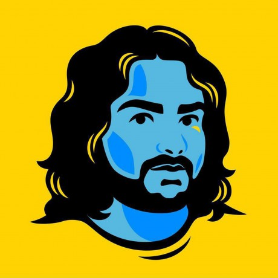

Healthy Releases and Releasers
With your host
@MylesBorins
Global Maintainer Summit
Oh Hai
My Name is Myles
I am gainfully employed by GitHub as a Product Manager
Focused on npm, GitHub Releases,
and end-to-end developer experiences
The opinions expressed in this talk are solely my own
In December of 2014
The Node.js project was forked
iojs was born
In September of 2015
Node.js was put into a foundation
The projects merged
Another exciting thing happened in 2015
the only challenge was
I had never contributed to Node.js core

Thankfully I had great mentors
Who pointed me towards testing
As a place to learn the project
Smoke Testing
Testing... is the path to the darkside
Testing Leads to Releases
Releases Lead to Responsibility
Responsibility Leads to Suffering
Responsibility Leads to Suffering Leadership
taking a step back
Releases, how do they work?
How do we determine semver?
check out http://semver.org/
What is a Patch
What is a Minor
What is a Major?
What is Long Term Support?
That's a lot of versions to juggle
At one point
I was doing the majority of the work.
In January of 2017 I did my first release of Node.js
Node.js v4.2.5
I proceeded to release
27 of the next 30 releases
of Node.js version 4.x
I then became the primary release manager
For Node.js 6.x LTS
Releasing 25 of the 32 LTS releases
This was not sustainable
I was burning out
I had also switched jobs
Not as much time during work hours to dedicate to releases
By the end of 2017 I was still doing ~60% of all releases in the project
I was going for a promotion at work
I could not sustain my current involvement
I nominated another collaborator to be the release lead for the v8.x LTS
I began working with them to better document and automate our process
There was a light at the end of the tunnel
This plan didn't work out
In May of 2018
I announced that I would step down from the release team in 6 months
the plan was to nominate and train 3 new members
Spoiler Alert: I'm still on the team 😅
No Single Points of Failure
Through 2018 and early 2019
I mentored 2 new LTS releasers
I also invested more time in improving policy and tooling
based on feedback of new team members
We made it easier to onboard folks
We added 4 new releasers
Between Mid-2018 and Late-2019
I did 45% of all project releases in 2018
I did 15% of all project releases in 2019
I've continued to do around 15% of releases since
You can't do everything yourself
If your process isn't documented others can't help you
In ambiguous situations most people won't do anything
Especially if they are not established leaders in a project
Software Releases are the quickest path
To intimate knowledge
of how your project works
If you want to change the representation in your project
Mentoring diverse releasers
Is a fantastic way to make measurable change
Release work is work
Make sure people are benefiting from this labor
This does not need to be financial (but it helps)
Take care of yourself
There is only one of you
Thank You